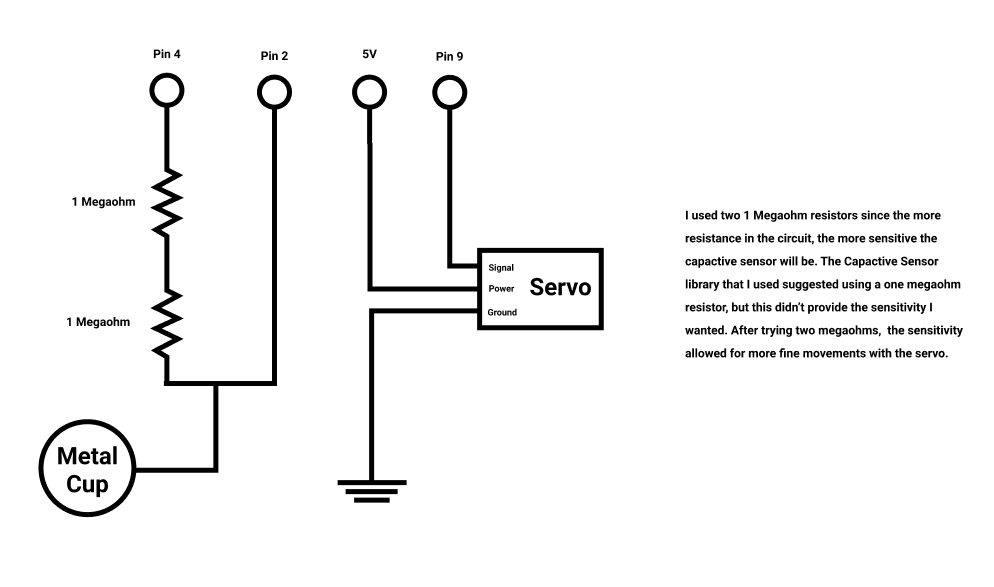
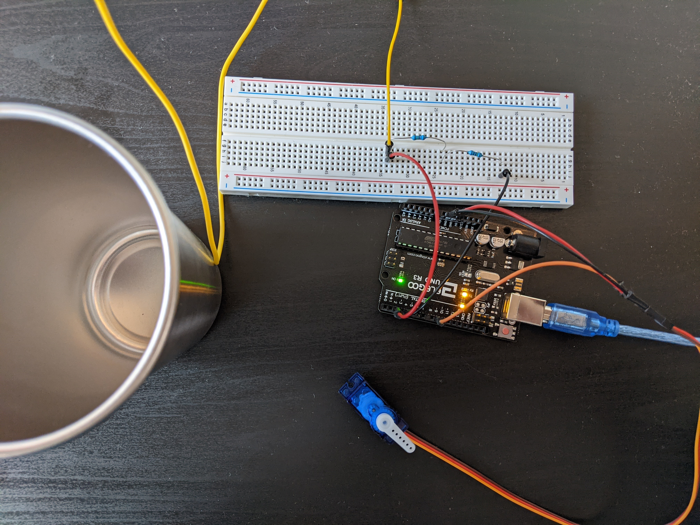
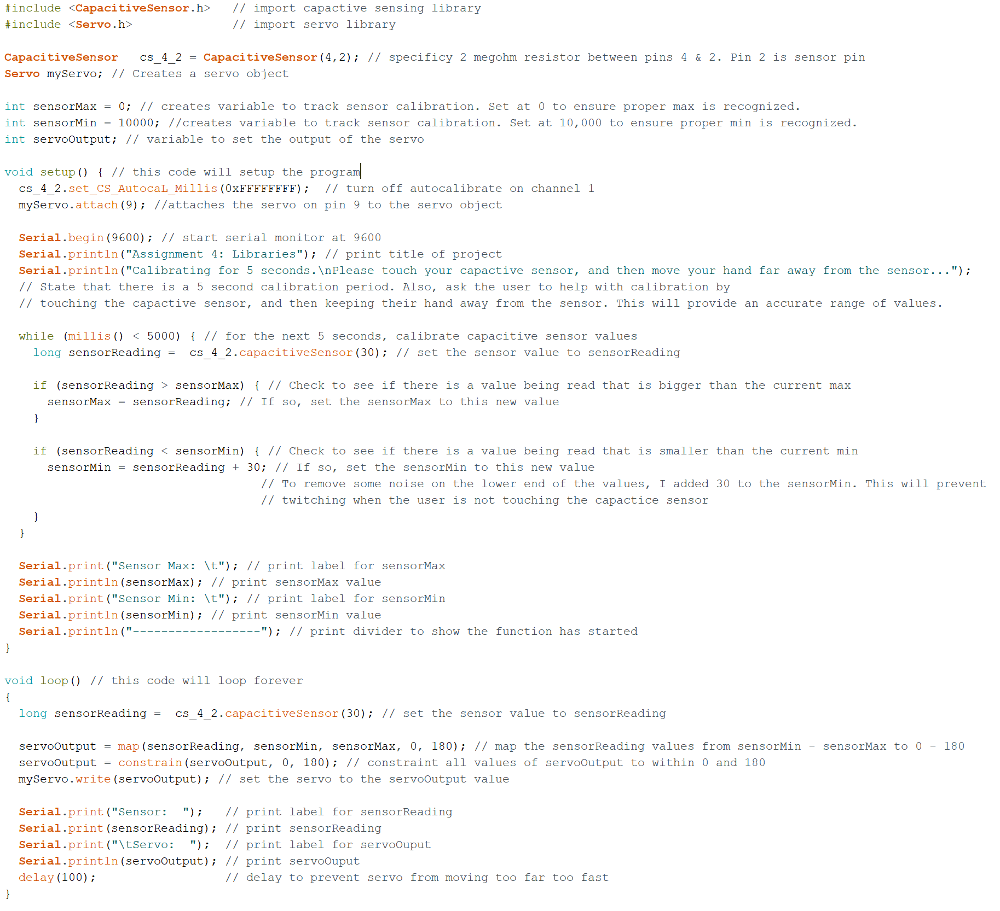

This is the schematic for my circuit. I utilized two 1 Megaohm resistors for the capactive sensing ciruit, and a metal cup as the capacitor

Here is a picture of my implemented circuit. I matched the colors of the servo wires to help readability.

This is the code for the circuit. I have a 5 second calibration phase, then in the loop I have the sensor input mapped to the servo output. I added print statements for the min and max sensor inputs to make sure the calibration was done correctly.

Here's the circuit in action! With more resistance I could have activated the servo from farther away, but I thought this distance was good for now.